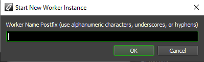
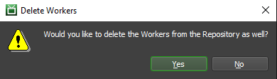

Multiple Workers On One Machine¶
Overview¶
Deadline has the ability to launch and configure an arbitrary number of Worker instances on a single machine. Each Worker instance can be given a unique name, and can be assigned its own list of Pools and Groups, which allows Workers to work independently on separate Jobs. A single high-performance machine could potentially process multiple 3D, compositing, and simulation Jobs simultaneously.
Note that the configurations for these Worker instances are stored locally on the Worker machine. This means that these Worker instances exist independently from the repository that the Workers connect to. So if you delete a Worker from the repository, the local configuration for that Worker instance still exists. Conversely, if you delete a local Worker instance, the Worker will still have an entry in the repository. It is possible to remove both the Worker from the repository and the local Worker instance from the Worker machine, which is covered below.
Licensing¶
Note
Starting with Deadline 10.1.23, Deadline and its components do not require a license. This section is left for operators of older versions of Deadline.
In Deadline 7 or later, all Worker instances running on a single operating system (physical or virtual) will use the same license. For example, if you had 3 Worker instances running on one operating system, they would only use 1 license.
Adding and Running Workers¶
There are three ways to launch new Worker instances:
From the Launcher menu by selecting Launch Worker By Name -> New Worker Instance. This is disabled by default, but can be enabled in the User Group Management settings.
From the right-click menu in the Worker list in the Monitor by selecting Remote Control -> Worker Commands -> Start New Worker Instance. By default, this is only available when in Power User Mode.
From the command line using the -name option.
deadlineworker -name "instance-01"
Additionally for a headless/no GUI machine, you would add a -nogui flag.
deadlineworker -name "instance-01" -nogui
Note that the name you enter is the postfix that is appended to the Worker’s base name. For example, if the Worker’s base name is “Render-02”, and you start a new instance on it called “instance-01”, the full name for that Worker instance will be “Render-02-instance-01”. This is done so that if the Worker’s machine name is changed, the full Worker name will be updated accordingly. Using the same example, if the machine was renamed to “Node-05”, the Worker instance will now be called “Node-05-instance-01”.
Once the new Worker shows up in the Worker List in the Monitor, you can configure it like any other Worker. You might want to use Worker Settings (see Worker Configuration) to assign the different Workers to run on separate CPUs. It might also be a good idea to assign them to different Pools and Groups, so that they can work on different types of Jobs to avoid competing for the same resource (e.g., you could have one Worker assigned to CPU intensive Jobs, while the other works on RAM intensive ones).
Once the Worker has been created, you can also launch it remotely like you would any other Worker. See the Remote Control documentation for more information.
Removing Workers¶
There are three ways to remove existing Worker instances:
From the Launcher menu by selecting Launch Worker By Name -> Remove Worker Instances. This is disabled by default, but can be enabled in the User Group Management settings.
From the right-click menu in the Worker list in the Monitor by selecting Remote Control -> Worker Commands -> Remove Worker Instance. This method gives the additional option to automatically remove the Worker instance from the repository as well. By default, this is only available when in Power User Mode. Note, the Worker must be disabled or offline before this option will be visible in the right-click menu.
Manually delete the .ini files that define the local Workers instances on the machine that the Worker runs on. See the Client Configuration documentation for more information.
Limiting and Disabling Multiple Workers¶
By default, users do not have the ability to launch additional Workers on their own machines (see User Group Management). However, there are some cases where you might want to completely disable the ability to run multiple Workers on the same machine.
The only known situation where this might be necessary is if your render nodes all net-boot off the same installation (meaning they share the same file system). In this case, if multiple Workers are enabled, each render node will end up trying to run a Worker instance for every other render node net-booting off the same installation.
In this scenario, you can disable the multi-worker feature by opening the system’s deadline.ini file and adding this line:
MultipleSlavesEnabled=False
The system deadline.ini file can be found in the following locations. Note that the [VERSION] in the path will change based on the Deadline version number.
Windows: %PROGRAMDATA%\Thinkbox\Deadline[VERSION]\deadline.ini
Linux: /var/lib/Thinkbox/Deadline[VERSION]/deadline.ini
macOS: /Users/Shared/Thinkbox/Deadline[VERSION]/deadline.ini

{kind=link}